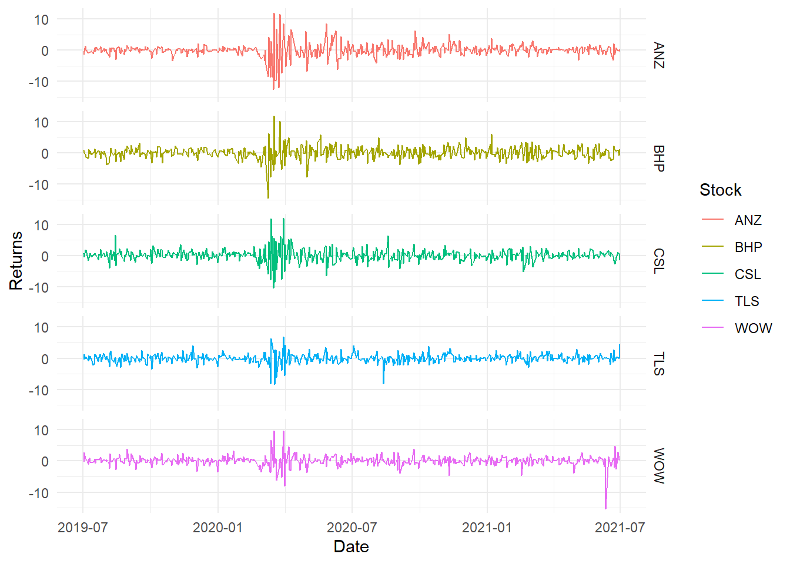
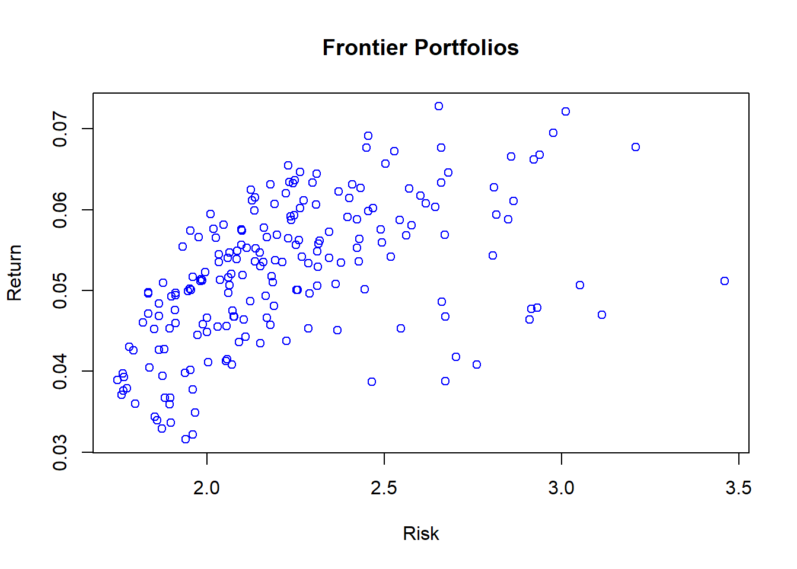
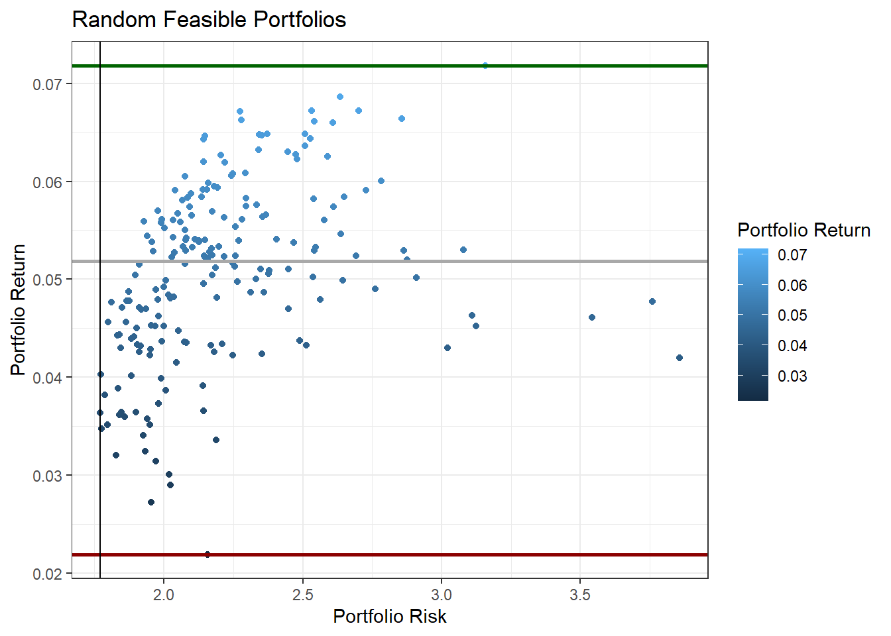

12.5 Using R to Construct Multi-Asset Portfolio
- This section will contruct a five (5) stock portfolio using prices downloaded from Yahoo finance
- The exercise first creates random weight portfolios then uses two packages PortfolioAnalytics and fPortfolio for risk-return efficient portfolios.
12.5.1 Data
- Download 2 year daily prices for BHP.AX, ANZ.AX, WOW.AX, TLS.AX and CSL.AX
- Stocks are chosen from different sectors
library(quantmod)
library(TTR)
# create a vector of stocks
s1 = c("BHP.AX", "ANZ.AX", "WOW.AX", "TLS.AX", "CSL.AX")
# download prices and create returns from Adjusted Prices
data1 = lapply(s1, FUN = function(x) {
ROC(Ad(getSymbols(x, from = "2019-07-01", to = "2021-06-30", auto.assign = FALSE)),
type = "discrete") * 100
}) #%returns
# convert to data frame
ret1 = as.data.frame(do.call(merge, data1))
# change columna names
colnames(ret1) = gsub(".AX.Adjusted", "", colnames(ret1))
# remove the first row of missing values
ret1 = ret1[-1, ]
# add dates column
ret1 = data.frame(Date = as.Date(row.names(ret1)), ret1)
row.names(ret1) = NULL
# save the dataframe (not necessarily required, only for
# reproducibility)
saveRDS(ret1, file = "data/port_ret.Rds")- Plot the data
library(pander)
library(ggplot2)
library(tidyr)
library(ggthemes)
ret1 = readRDS("data/port_ret.Rds")
# overview
pander(head(ret1), split.table = Inf)| Date | BHP | ANZ | WOW | TLS | CSL |
|---|---|---|---|---|---|
| 2019-07-02 | 0.8637 | -1.45 | -0.2726 | -0.5222 | 0.6696 |
| 2019-07-03 | 0.09515 | -0.287 | 2.703 | 1.312 | -0.3486 |
| 2019-07-04 | -0.5466 | 1.331 | 0.7096 | 0 | 1.781 |
| 2019-07-05 | -1.338 | -0.03551 | 0.734 | 0.5181 | 1.596 |
| 2019-07-08 | -1.768 | -0.9591 | -1.137 | -0.7732 | -1.491 |
| 2019-07-09 | 1.159 | -0.6815 | 0.6486 | 0.7792 | -0.5874 |
# convert to long
ret_long = pivot_longer(ret1, cols = -c(Date), values_to = "Return", names_to = "Stock")
# plot
port_p1 = ggplot(ret_long, aes(Date, Return, color = Stock)) + geom_path(stat = "identity") +
facet_grid(Stock ~ .) + theme_minimal() + labs(x = "Date", y = "Returns")
port_p1 #covid crisis period is evident in the plot

Figure 12.2: Simple returns
12.5.2 Portfolios with random weights
- Calculate the mean returns
- Calculate variance-covariance matrix
- Create series of random weights
- Create series of rerturns and risks
- Create plot
np1 = 200 #number of portfolios
ret2 = ret1[, -1] #excluding dates
mu1 = colMeans(ret2) #mean returns
na1 = ncol(ret2) #number of assets
varc1 = cov(ret2)
riskp1 = NULL #vector to store risk
retp1 = NULL #vector to store returns
# using loops here (not aiming for efficiency but demonstration)
for (i in 1:np1) {
w = diff(c(0, sort(runif(na1 - 1)), 1)) # random weights
r1 = t(w) %*% mu1 #matrix multiplication
sd1 = t(w) %*% varc1 %*% w
retp1 = rbind(retp1, r1)
riskp1 = rbind(riskp1, sd1)
}
# create a data frame of risk and return
d_p1 = data.frame(Ret = retp1, Risk = riskp1)
# simple plot
plot(d_p1$Risk, d_p1$Ret, xlab = "Risk", ylab = "Return", main = "Frontier Portfolios",
col = "blue")

Figure 12.3: Random Portfolios
- Use ggplot2
library(ggplot2)
# first layer
p1 = ggplot(d_p1, aes(Risk, Ret, colour = Ret))
# scatter plot
p1 = p1 + geom_point()
# scatter plot with density and identified port risk return (highest
# lowest returns and min risk)
p1 + geom_point() + geom_hline(yintercept = c(max(d_p1$Ret), median(d_p1$Ret),
min(d_p1$Ret)), colour = c("darkgreen", "darkgray", "darkred"), size = 1) +
geom_vline(xintercept = d_p1[(d_p1$Risk == min(d_p1$Risk)), ][, 2]) +
labs(colour = "Portfolio Return", x = "Portfolio Risk", y = "Portfolio Return",
title = "Random Feasible Portfolios") + theme_bw()

Figure 12.4: Random Portfolios